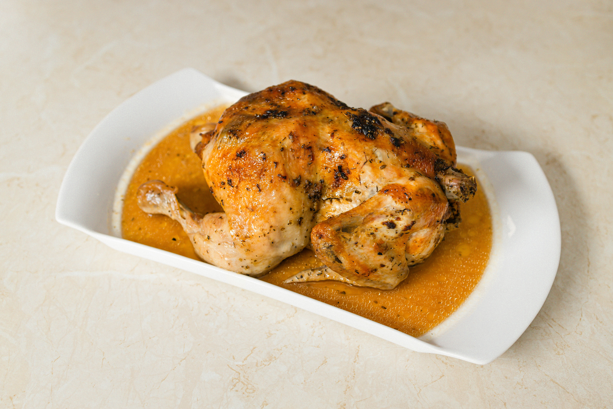

Preheat an outdoor grill for high heat and lightly oil the grate. Gather all ingredients. Season chicken cavity with 1 pinch salt. Tie legs together with kitchen string; tie wings to bird. Secure chicken on a rotisserie attachment. Place rotisserie onto the preheated grill; cook for 10 minutes. Meanwhile, combine butter, 1 tablespoon salt, paprika, and black pepper. Reduce grill temperature to medium; baste chicken with butter mixture. Close the lid. Cook on the preheated grill, basting occasionally, until chicken is cooked through and an instant-read thermometer inserted into the thickest part of the thigh, near but not touching the bone, reads 180 degrees F (83 degrees C), 1 to 1 ½ hours. Remove chicken from rotisserie; rest for 10 to 15 minutes before carving.